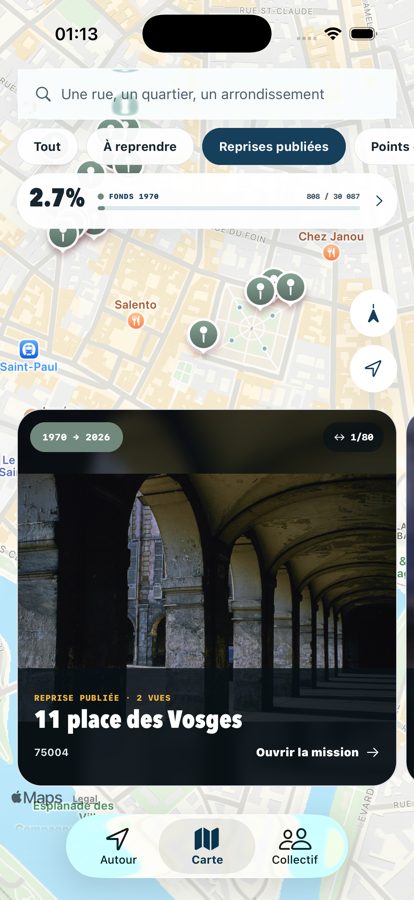

Choisissez une archive
Parcourez la grille historique et repérez les photographies encore à retrouver autour de vous.
Paris · 1970 → aujourd’hui
Reprise transforme Paris en terrain d’enquête photographique. Retrouvez une archive, rejoignez le lieu et alignez votre cadrage.

Une mémoire collective
En 1970, un concours amateur a produit des dizaines de milliers d’images, aujourd’hui conservées par la Bibliothèque historique de la Ville de Paris. La campagne de l’Observatoire invite à reprendre ces vues pour documenter l’évolution des paysages parisiens.
Parcourez la grille historique et repérez les photographies encore à retrouver autour de vous.
Utilisez la carte, les indices de lieu et l’image de référence pour retrouver le cadrage d’origine.
Superposez l’archive à la caméra, conservez votre photo et contribuez volontairement à l’Observatoire.
Dans l’application
Reprise rassemble les données publiques utiles sans compte, sans publicité et sans dépôt automatique. Vous gardez la main sur la photo et sur chaque contribution.



Sous votre contrôle
La caméra, la position et l’ajout à la photothèque ne sont utilisés qu’avec votre autorisation. Reprise n’exige aucun compte et ne possède aucun serveur de stockage utilisateur.
Vos prises de vue et votre carnet restent sur votre appareil. Vous pouvez retirer les autorisations depuis les réglages du téléphone.
Le formulaire officiel reste sous votre contrôle. Identité, consentements, vérification et envoi final sont toujours manuels.
Aucun compte, aucun profil publicitaire et aucun suivi entre applications ne sont nécessaires pour utiliser Reprise.
Le code de l’application est publié sous licence MIT et peut être consulté sur GitHub.
Projet indépendant
Reprise est une application indépendante éditée par Élie Brosset. Elle accompagne l’Observatoire photo participatif des paysages parisiens, animé par le CAUE de Paris, sans s’y substituer.